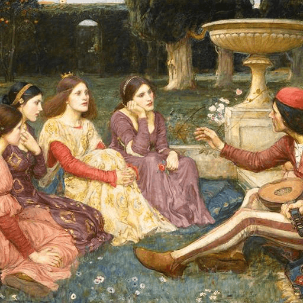

Hexagram 48 – Jing: The Living Well
Upper: Water (☵) · Lower: Wind (☴)

Core Meaning
Your most reliable resources may already be within you. Like a well, skill and strength stay useful when they are maintained and kept clear. Deepen what you already have, repair what has been neglected, and let your value flow again.
“I draw from a deep inner source and keep it clear through steady care.”
Blessing
May you become a steady source of support for others without forgetting to replenish yourself.
Guidance by Life Area
Love
A relationship needs regular care, not only early passion. Refresh the daily connection and keep the existing foundation alive.
Refresh daily interaction:
- Keep care flowing.
- Deepen the base you already have.
Career
You already have useful skills and resources. Deepen them, repair neglected projects, and make your existing strengths more valuable.
Sharpen existing skills:
- Revisit neglected work.
- Deepen your professional well.
Health
Health depends on basic maintenance. Keep sleep, food, movement, and recovery steady rather than constantly chasing new methods.
Protect the basic routine:
- Rebuild from within.
- Favor consistency over novelty.
Finances
Stable finances come from reliable sources and consistent accumulation. Deepen what already earns and close the leaks.
Deepen reliable income:
- Close financial leaks.
- Build through accumulation.
Relationships
Long-term relationships are often more valuable than constantly meeting new people. Maintain the connections that have proven reliable.
Keep in touch with long-term people:
- Maintain trust.
- Let old relationships stay alive.